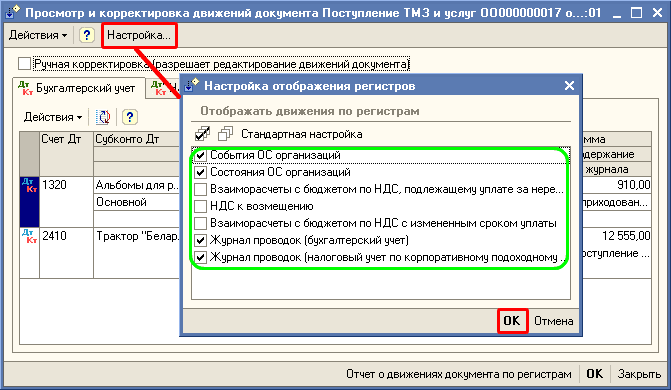
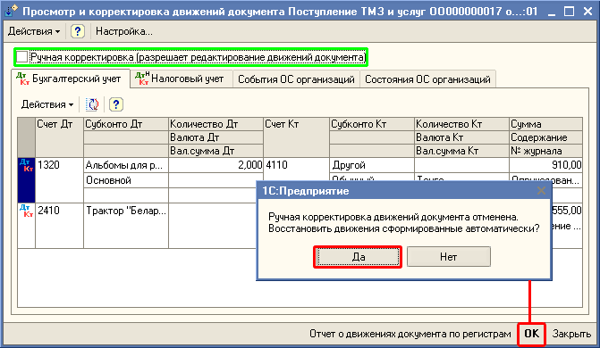

Обработка "Корректировка движений" предназначена для просмотра движений документов, а также для ручной корректировки движений документов.
Обработка для просмотра движений вызывается из всех документов конфигурации, а ручная корректировка возможна только для пользователей с правами "Полные права" и "Редактирование движений документа" и для документов которые при записи в информационную базу делают движения по регистрам (проводки по бухгалтерскому учету, по налоговому и др.). Вызов обработки осуществляется из формы списка, формы выбора, формы документа при нажатии на кнопку в верхней командной панели форм.
Для корректировки движений документа необходимо установить флажок "Ручная корректировка" и отредактировать значения движений (например, аналитику, сумму, количество, счета учета, и т.д.), т.е все имеющие поля. Также можно добавить новые движения.
Для добавления или удаления списка регистров, по которому были или не было движений можно с помощью форму настройки, в которой отображаются все регистры по которым может делать движения данный документ. Открыть форму настройки можно с помощью кнопке "Настройка", находящейся в верхней командной панели формы обработки.

Важно: При установленом признаке "Ручная корректировка" в обработке "Корректировка движений" движения документа при перепроведения не будут восстанавливатся данными из документа, а будет выходить сообщение: "Движения документа отредактированы вручную и не могут быть автоматически актуализированы". Данные печатной формы и движений будут различны, при установленном признаке "Ручная корректировка". Поэтому применяя признак "Ручная корректировка" необходимо проанализировать неизбежность ее применения для документа.
Если признак "Ручная корректировка" был ошибочно установлен (или уже нет необходимости в нем), то чтобы восстановить движения документа, необходимо снять галочку "Ручная корректировка", тогда движения автоматически восстановятся по данным документа.
